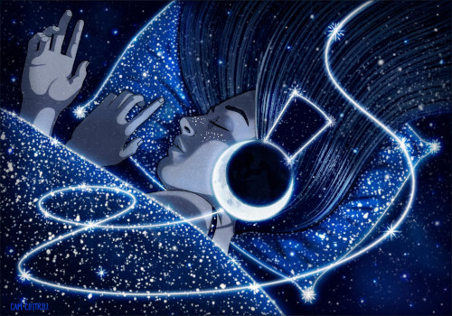

MUSIC
Just a bit of background!
Although a bit longer this time, as there is too much ground to cover.
Music, which is a universal language that transcends cultural barriers, has been a crucial part of human civilisation since ancient times, long before the development of written language. Early humans communicated through vocalisations and body percussion, using music as a powerful tool to express emotions, rituals, and tribal identities. Various musical instruments, such as bone flutes, percussion tools, and stringed instruments, were developed by ancient cultures to enrich their musical repertoire.
Music has evolved and adapted over time to reflect humanity’s diverse experiences and emotions. From the earliest forms of vocal expression to the complex symphonies and digital compositions of today, music has undergone several transformations. For instance, music started being associated with religion and became more sophisticatedly harmonised with the development of polyphony and musical notation. Later, it became grandiose and theatrical with the evolution of orchestra and opera, then shifted towards clarity and balance by refining symphonic structures. Then it was revolutionised by emphasising emotional expression and individuality.
The advent of the phonograph (late 19th century), allowed music to be recorded and distributed ,thus revolutionised the music industry. It laid the foundation for the modern music industry as we know it today.
The modern era (20th century) witnessed an explosion of musical experimentation.
The emergence of Jazz brought forth a new genre that blended African rhythms with Western instruments, leading to the
jazz era. Then the birth of Rock ‘n’ Roll revolutionised popular music, and the advent
of electronic
music paved the way for genres like techno, hip-hop, and electronic dance music (EDM).
The digital revolution of the 21st century has transformed the music landscape. Digital audio workstations (DAWs) and software synthesisers have democratised music creation and production, making it more accessible than ever before. Online streaming platforms and social media have transformed music distribution and consumption, providing global exposure to artists from diverse backgrounds.
Music in a form of lullabies.
Nursery rhymes and lullabies have long been a trusted bedtime routine for parents. The gentle rhythms and soothing melodies of these songs can aid in putting babies to sleep more soundly. They create a perfect balance that can lull the baby into sleeping, providing comfort and security.
During the first couple months after birth, the brain processes music in specialized areas, which can help the baby connect, communicate, move, relax, coordinate, and feel pleasure.
Studies have shown that babies respond to universal aspects of lullabies, even when the song is sung in an unfamiliar language and tune. As the infants become relaxed while listening to lullabies, they experience a decrease in heart rates, dilated pupils, and reduced electrodermal activity. These changes suggest that the shooting music had special psychological effects that could induce sleep. This effect can also be observed at an older age, highlighting the universal appeal and benefits of lullabies and calming music.
Some examples:
So how could music help in sleeping?
Many people use music to regulate their mood and arousal and decrease negative thoughts. By plugging in their headphones or turning up the volume, they can reset their minds and boost their energy and mood. Also, relaxing or meditative music can help ease the mind and make people fall asleep. Several research studies support the idea.
A plethora of studies conducted in clinical settings have robustly suggested that sedative music may have positive effects on sleep. Sleep is achieved through muscle relaxation and distraction from thoughts. Music has been found to reduce sympathetic nervous system activity and decrease anxiety, blood pressure, and heart and respiratory rates.
Several studies have specifically examined the effects of music on sleep, offering a glimmer of hope for those grappling with sleep disturbances. Others have delved into the impact of relaxing music on sleep and pain or investigated the effects of ‘Brain Music’. ‘Brain Music’ is the conversion of spontaneous bioelectrical activity into music. All studies have unequivocally demonstrated that music has a statistically significant sleep-promoting effect. These findings strongly suggest that music could be a potential non-pharmacological intervention for the treatment of sleep disturbances such as insomnia, offering a beacon of hope for those in need of a restful night’s sleep.
Whart kind of music could be the most efficient to drift you away?
It mainly depends on the person’s taste and what kind of musing has a calming quality on the individual. However, some suggestions are worth trying out!
- Healing sleep music: Solfeggio frequencies
- Instrumental sleep music
- Sleep music with nature sounds
- Sleep music waves: Binaural beats and isochronic tones
- Instrumental sleep music